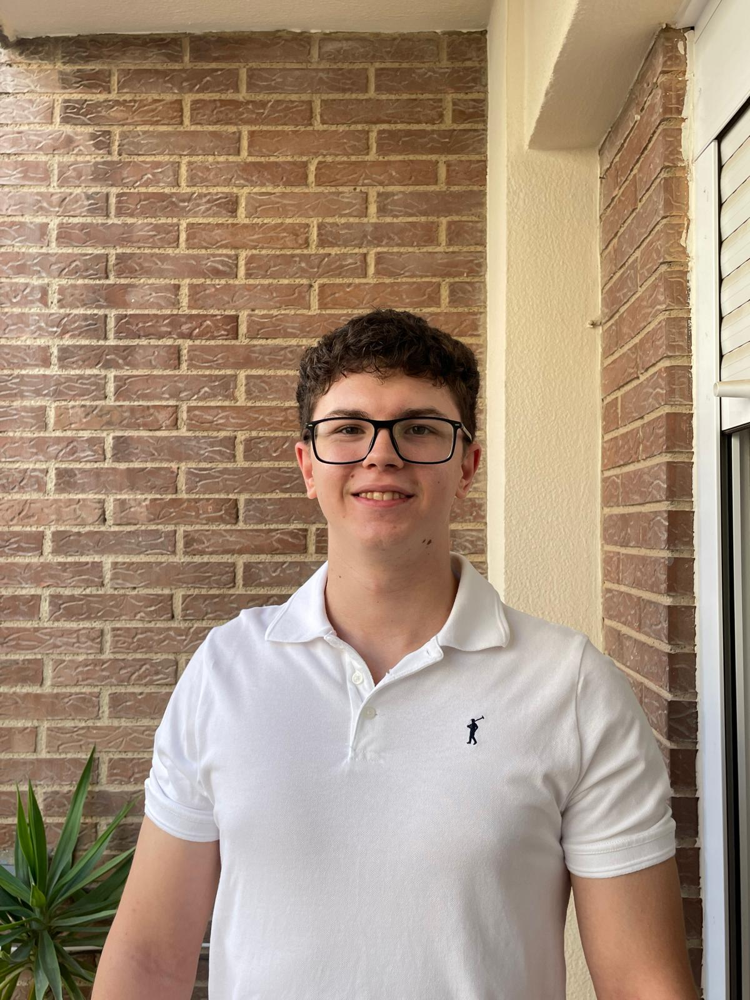

<!doctype html>
<html lang="es">
<head>
<meta charset="utf-8">
<title>Igor Ostyak — AI & Big Data Engineer</title>
<meta name="viewport" content="width=device-width, initial-scale=1">
<link rel="preconnect" href="https://fonts.googleapis.com">
<link rel="preconnect" href="https://fonts.gstatic.com" crossorigin>
<link href="https://fonts.googleapis.com/css2?family=Instrument+Serif:ital@0;1&family=Inter:wght@300;400;500;600;700&family=JetBrains+Mono:wght@300;400;500&display=swap" rel="stylesheet">
<script src="https://cdn.tailwindcss.com"></script>
<script src="https://unpkg.com/react@18.3.1/umd/react.development.js" integrity="sha384-hD6/rw4ppMLGNu3tX5cjIb+uRZ7UkRJ6BPkLpg4hAu/6onKUg4lLsHAs9EBPT82L" crossorigin="anonymous"></script>
<script src="https://unpkg.com/react-dom@18.3.1/umd/react-dom.development.js" integrity="sha384-u6aeetuaXnQ38mYT8rp6sbXaQe3NL9t+IBXmnYxwkUI2Hw4bsp2Wvmx4yRQF1uAm" crossorigin="anonymous"></script>
<script src="https://unpkg.com/@babel/standalone@7.29.0/babel.min.js" integrity="sha384-m08KidiNqLdpJqLq95G/LEi8Qvjl/xUYll3QILypMoQ65QorJ9Lvtp2RXYGBFj1y" crossorigin="anonymous"></script>
<style>
  :root{
    --bg: #0a0a0b;
    --bg-2: #111113;
    --ink: #eeeae2;
    --ink-dim: #8a8781;
    --ink-faint: #3a3935;
    --accent: oklch(0.78 0.18 142);
    --line: #1f1f22;
  }
  html,body{background:var(--bg);color:var(--ink);}
  body{font-family:'Inter',system-ui,sans-serif;font-feature-settings:"ss01","cv11";-webkit-font-smoothing:antialiased;}
  .serif{font-family:'Instrument Serif',serif;font-weight:400;letter-spacing:-0.01em;}
  .mono{font-family:'JetBrains Mono',monospace;}
  .ink-dim{color:var(--ink-dim);}
  .ink-faint{color:var(--ink-faint);}
  .bg-ink{background:var(--ink);}
  .text-bg{color:var(--bg);}
  .accent{color:var(--accent);}
  .bg-accent{background:var(--accent);}
  .border-line{border-color:var(--line);}
  .grid-lines{
    background-image:
      linear-gradient(to right, var(--line) 1px, transparent 1px);
    background-size: calc(100%/12) 100%;
  }
  @media (max-width: 900px){ .grid-lines{ background-size: 25% 100%; } }

  /* subtle noise */
  .noise{position:fixed;inset:0;pointer-events:none;z-index:1;opacity:.035;mix-blend-mode:overlay;
    background-image:url("data:image/svg+xml;utf8,<svg xmlns='http://www.w3.org/2000/svg' width='120' height='120'><filter id='n'><feTurbulence type='fractalNoise' baseFrequency='0.9' numOctaves='2'/></filter><rect width='100%' height='100%' filter='url(%23n)'/></svg>");
  }

  /* reveal */
  .reveal{opacity:0;transform:translateY(14px);transition:opacity .8s ease, transform .8s ease;}
  .reveal.in{opacity:1;transform:none;}

  /* link underline */
  .link{position:relative;}
  .link::after{content:"";position:absolute;left:0;right:0;bottom:-2px;height:1px;background:currentColor;transform:scaleX(0);transform-origin:right;transition:transform .5s cubic-bezier(.2,.7,0,1);}
  .link:hover::after{transform:scaleX(1);transform-origin:left;}

  /* project row hover */
  .prow{transition:background .4s ease;}
  .prow:hover{background:#101012;}
  .prow:hover .pimg{opacity:1;transform:translate(-50%,-50%) scale(1);}
  .pimg{position:fixed;pointer-events:none;width:340px;height:220px;left:50%;top:50%;transform:translate(-50%,-50%) scale(.96);opacity:0;transition:opacity .35s ease, transform .35s ease;z-index:50;border:1px solid var(--line);overflow:hidden;}

  /* marquee */
  @keyframes slide { from{transform:translateX(0)} to{transform:translateX(-50%)} }
  .marquee{display:flex;width:max-content;animation:slide 60s linear infinite;}

  /* blink */
  @keyframes blink { 50% { opacity: 0; } }
  .blink{animation:blink 1.1s steps(1) infinite;}

  /* cursor dot */
  .cursor-dot{position:fixed;width:6px;height:6px;border-radius:999px;background:var(--accent);top:0;left:0;transform:translate(-50%,-50%);pointer-events:none;mix-blend-mode:difference;z-index:60;transition:width .2s, height .2s, background .2s;}
  .cursor-ring{position:fixed;width:28px;height:28px;border-radius:999px;border:1px solid var(--ink-faint);top:0;left:0;transform:translate(-50%,-50%);pointer-events:none;z-index:60;transition:transform .25s ease, border-color .25s;}

  /* hero shader */
  .heroGrad{
    background:
      radial-gradient(60% 60% at 20% 30%, rgba(150,255,180,0.06) 0%, transparent 60%),
      radial-gradient(50% 50% at 80% 70%, rgba(80,100,255,0.05) 0%, transparent 60%);
  }

  /* ticker */
  .ticker-row{border-top:1px solid var(--line);border-bottom:1px solid var(--line);}

  /* dot grid hero visual */
  .dotgrid{
    background-image: radial-gradient(var(--ink-faint) 1px, transparent 1px);
    background-size: 14px 14px;
  }

  /* soft scrollbar */
  ::-webkit-scrollbar{width:10px;height:10px}
  ::-webkit-scrollbar-thumb{background:#1a1a1c;border-radius:10px}
  ::-webkit-scrollbar-track{background:var(--bg)}

  /* selection */
  ::selection{background:var(--accent);color:var(--bg);}

  /* responsive type */
  .h-display{font-size: clamp(54px, 11vw, 200px); line-height:.88; letter-spacing:-0.03em;}
  .h-section{font-size: clamp(28px, 5vw, 64px); line-height:.96; letter-spacing:-0.02em;}
  .h-project{font-size: clamp(34px, 5.5vw, 88px); line-height:.92; letter-spacing:-0.025em;}
  .h-small{font-size: clamp(18px, 2.4vw, 28px); line-height:1.1; letter-spacing:-0.01em;}

  details > summary { list-style: none; cursor: pointer; }
  details > summary::-webkit-details-marker { display:none; }

  /* portrait treatment — desaturated to match palette, color on hover */
  .portrait-img{
    filter: grayscale(0.5) contrast(1.04) brightness(0.94);
    transition: filter .6s ease, transform .9s cubic-bezier(.2,.7,0,1);
    transform: scale(1.02);
  }
  .portrait:hover .portrait-img{
    filter: grayscale(0) contrast(1) brightness(1);
    transform: scale(1.06);
  }

  /* image placeholder stripes */
  .ph-stripes{
    background:
      repeating-linear-gradient(135deg, rgba(255,255,255,0.02) 0 6px, transparent 6px 12px),
      #141416;
  }

</style>
</head>
<body class="antialiased">
  <div class="noise"></div>
  <div id="cursor-ring" class="cursor-ring hidden md:block"></div>
  <div id="cursor-dot" class="cursor-dot hidden md:block"></div>
  <div id="root"></div>

<script type="text/babel" data-presets="react">
const { useState, useEffect, useRef, useMemo } = React;

/* ---------- i18n ---------- */
const DICT = {
  es: {
    nav: { work: "Trabajo", about: "Sobre mí", stack: "Stack", education: "Formación", contact: "Contacto" },
    statusOpen: "Disponible · Valencia o remoto",
    role: "AI & Big Data Engineer",
    heroLine1: "Construyo sistemas de",
    heroLine2: "inteligencia",
    heroLine3: "que piensan en producción.",
    heroSub: "Especializado en RAG, machine learning y soluciones sobre AWS. De la prueba de concepto al producto desplegado y funcionando.",
    scroll: "Desplaza",
    sec01: "Trabajo seleccionado",
    sec01sub: "Cinco proyectos, de modelos de visión a asistentes LLM en AWS.",
    sec02: "Sobre",
    sec02sub: "Perfil",
    about1: "Técnico en Desarrollo de Aplicaciones Multiplataforma, especializado en IA y Big Data. Me muevo en la intersección entre modelos, datos y producto: diseñar la arquitectura, escribir el código y que lo que entrego funcione de verdad.",
    about2: "Vengo del desarrollo de software — Java, web, bases de datos — así que no solo entreno modelos: sé construir el producto entero alrededor de ellos. Hoy lo aplico en proyectos de IA y datos: RAG sobre AWS Bedrock, visión por computador con TensorFlow y análisis de datos con Python. Me importa entender el porqué, no solo que funcione.",
    about3: "Tengo muchas ganas de aprender, mejorar y crecer — y busco mi primera oportunidad full-time como AI o Data Engineer, donde aportar lo que sé y seguir descubriendo.",
    sec03: "Stack técnico",
    sec03sub: "Herramientas que uso a diario",
    sec04: "Formación",
    sec04sub: "Certificaciones y grados",
    sec05: "Hablemos",
    sec05sub: "Abierto a oportunidades",
    contactIntro: "Si tienes un reto en IA, un pipeline que duele, o estás montando equipo — escríbeme. Respondo en menos de 24h.",
    contactCTA: "Enviar un email",
    localTime: "Hora local",
    basedIn: "Valencia, España",
    role2: "AI / Data Engineer",
    status: "Buscando posición",
    langToggle: "EN",
    cta: "Ver proyectos",
    lookAt: "Ver",
    year: "AÑO",
    role_label: "ROL",
    stack_label: "STACK",
    details: "Detalles",
    viewRepo: "Ver repositorio",
    roles: {
      flagship: "Proyecto estrella",
      ml: "Visión por computador",
      mobile: "App móvil nativa",
      data: "Análisis de datos",
      llm: "LLM / RAG"
    },
    projects: [
      {
        tag:"01 — FLAGSHIP",
        title:"F1 Engineering Assistant",
        year:"2025",
        role:"AI / Arquitectura RAG",
        sub:"Asistente RAG sobre los reglamentos oficiales de la FIA, con AWS Bedrock Agents y Chainlit.",
        body:"Asistente de ingeniería de Fórmula 1 que usa RAG sobre una base de conocimiento en AWS (S3) para consultar los Reglamentos Técnico, Deportivo y Financiero oficiales de la FIA. Dos perfiles adaptativos — modo Pro (respuestas técnicas con citas a artículos específicos) y modo Básico (explicaciones didácticas). Memoria persistente en SQLite con modo WAL, citas interactivas a los PDFs fuente y síntesis de voz con Amazon Polly. Construido con Chainlit y Python.",
        stack:["AWS Bedrock","Chainlit","RAG","SQLite WAL","Amazon Polly"]
      },
      {
        tag:"02 — VISION",
        title:"Brain Tumor Classifier",
        year:"2024",
        role:"Visión por computador",
        sub:"Clasificador de tumores cerebrales sobre resonancias magnéticas — 93.19% de precisión.",
        body:"Comparativa de distintas arquitecturas de redes neuronales convolucionales (CNN) entrenadas en TensorFlow/Keras para clasificar tumores cerebrales en cuatro clases (glioma, meningioma, pituitario y sin tumor) a partir de imágenes MRI. El mejor modelo alcanzó un 93.19% de accuracy, desplegado en una mini-aplicación web interactiva con Streamlit donde se sube una imagen y se obtiene el diagnóstico asistido.",
        stack:["TensorFlow","Keras","CNN","Streamlit","Python"]
      },
      {
        tag:"03 — MOBILE",
        title:"GymTracker",
        year:"2024",
        role:"App Android nativa · TFG",
        sub:"Proyecto final de Grado DAM — app nativa de seguimiento deportivo, defendida con éxito.",
        body:"Aplicación Android nativa (Java + Android Studio) y proyecto final de mi Grado en DAM. Backend en Firebase (Auth, Firestore NoSQL y Storage) y geolocalización en tiempo real con OpenStreetMap (osmdroid + Overpass API). Incluye rutinas personalizadas, catálogo de ejercicios por grupo muscular con vídeos, análisis e histórico de IMC, notificaciones semanales, buscador de gimnasios sobre mapas y un comparador de suplementación. Superó un ciclo completo de pruebas de caja negra/blanca y feedback de usuario.",
        stack:["Java","Android Studio","Firebase","OpenStreetMap"]
      },
      {
        tag:"04 — DATA",
        title:"Valencia Airbnb Insights",
        year:"2025",
        role:"Análisis de datos",
        sub:"Análisis del mercado de alquiler turístico de Valencia con datos reales de Inside Airbnb.",
        body:"Limpieza y transformación de datos de Inside Airbnb con Pandas y NumPy (filtrado de outliers, valores nulos), análisis de precios por barrio y distrito, y cruce con reseñas para medir demanda real. Visualización con Seaborn y un mapa interactivo en Plotly, presentado como slides navegables. Conclusiones accionables sobre dónde invertir y qué tipología de alojamiento funciona mejor.",
        stack:["Python","Pandas","NumPy","Plotly","Seaborn","Jupyter"]
      },
      {
        tag:"05 — LLM",
        title:"Chatbot RAG",
        year:"2025",
        role:"LLM / RAG",
        sub:"Q&A sobre tus propios PDFs con LangChain, Llama 3 (Groq) y ChromaDB.",
        body:"Chatbot de preguntas y respuestas con arquitectura RAG: el usuario sube sus PDFs y pregunta sobre su contenido. Usa LangChain como framework, Llama 3 servido por Groq para la inferencia, ChromaDB como base vectorial y embeddings locales de Hugging Face para la búsqueda semántica. Cada respuesta incluye las fuentes citadas y, si no encuentra la información, lo dice honestamente. Interfaz con Chainlit. Proyecto en pareja.",
        stack:["LangChain","Llama 3 · Groq","ChromaDB","Chainlit","Python"]
      }
    ],
    eduItems: [
      { year:"2024 — 2026", title:"Especialización en IA y Big Data", place:"IES Eduardo Primo Marqués" },
      { year:"2022 — 2024", title:"Grado Superior en Desarrollo de Aplicaciones Multiplataforma", place:"IES Eduardo Primo Marqués" },
      { year:"2020 — 2022", title:"Grado Medio en Instalaciones de Telecomunicaciones", place:"IES El Cabanyal" }
    ],
    footerLeft: "Diseñado y programado por Igor Ostyak.",
    footerRight: "v2026.04"
  },
  en: {
    nav: { work: "Work", about: "About", stack: "Stack", education: "Education", contact: "Contact" },
    statusOpen: "Open to work · Valencia or remote",
    role: "AI & Big Data Engineer",
    heroLine1: "I build",
    heroLine2: "intelligence",
    heroLine3: "systems that ship.",
    heroSub: "Specialised in RAG, machine learning and solutions on AWS. From proof of concept to a deployed, working product.",
    scroll: "Scroll",
    sec01: "Selected work",
    sec01sub: "Five projects, from vision models to LLM assistants on AWS.",
    sec02: "About",
    sec02sub: "Profile",
    about1: "Multi-platform Application Development technician, specialised in AI and Big Data. I work at the intersection of models, data and product: design the architecture, write the code, and make sure what I ship actually works.",
    about2: "I come from software development — Java, web, databases — so I don't just train models: I can build the whole product around them. Today I apply it to AI and data projects: RAG on AWS Bedrock, computer vision with TensorFlow and data analysis in Python. I care about understanding the why, not just that it works.",
    about3: "I'm eager to learn, improve and grow — and I'm looking for my first full-time role as an AI or Data Engineer, where I can contribute what I know and keep discovering.",
    sec03: "Tech stack",
    sec03sub: "Daily tools",
    sec04: "Education",
    sec04sub: "Degrees & certifications",
    sec05: "Let's talk",
    sec05sub: "Open to opportunities",
    contactIntro: "If you have an AI challenge, a pipeline that hurts, or you're building a team — write me. I reply in under 24h.",
    contactCTA: "Send an email",
    localTime: "Local time",
    basedIn: "Valencia, Spain",
    role2: "AI / Data Engineer",
    status: "Looking for a role",
    langToggle: "ES",
    cta: "See projects",
    lookAt: "View",
    year: "YEAR",
    role_label: "ROLE",
    stack_label: "STACK",
    details: "Details",
    viewRepo: "View repository",
    roles: {
      flagship: "Flagship project",
      ml: "Computer vision",
      mobile: "Native mobile",
      data: "Data analysis",
      llm: "LLM / RAG"
    },
    projects: [
      {
        tag:"01 — FLAGSHIP",
        title:"F1 Engineering Assistant",
        year:"2025",
        role:"AI / RAG architecture",
        sub:"RAG assistant over the official FIA regulations, with AWS Bedrock Agents and Chainlit.",
        body:"Formula 1 engineering assistant that uses RAG over an AWS (S3) knowledge base to query the official FIA Technical, Sporting and Financial regulations. Two adaptive profiles — Pro mode (technical answers with citations to specific articles) and Basic mode (didactic explanations). Persistent memory via SQLite in WAL mode, interactive citations to source PDFs, and voice synthesis with Amazon Polly. Built with Chainlit and Python.",
        stack:["AWS Bedrock","Chainlit","RAG","SQLite WAL","Amazon Polly"]
      },
      {
        tag:"02 — VISION",
        title:"Brain Tumor Classifier",
        year:"2024",
        role:"Computer vision",
        sub:"MRI brain-tumor classifier — 93.19% accuracy.",
        body:"Comparison of several convolutional neural network (CNN) architectures trained in TensorFlow/Keras to classify brain tumors into four classes (glioma, meningioma, pituitary and no tumor) from MRI images. The best model reached 93.19% accuracy and was deployed as an interactive Streamlit web app where you upload an image and get an AI-assisted diagnosis.",
        stack:["TensorFlow","Keras","CNN","Streamlit","Python"]
      },
      {
        tag:"03 — MOBILE",
        title:"GymTracker",
        year:"2024",
        role:"Native Android · Final project",
        sub:"DAM degree final project — native fitness-tracking app, successfully defended.",
        body:"Native Android app (Java + Android Studio) and the final project of my Multi-platform Development degree. Firebase backend (Auth, Firestore NoSQL and Storage) and real-time geolocation with OpenStreetMap (osmdroid + Overpass API). Features custom routines, an exercise catalog by muscle group with videos, BMI analysis and history, weekly notifications, a map-based gym finder and a supplement comparator. Passed a full cycle of black-box/white-box and user testing.",
        stack:["Java","Android Studio","Firebase","OpenStreetMap"]
      },
      {
        tag:"04 — DATA",
        title:"Valencia Airbnb Insights",
        year:"2025",
        role:"Data analysis",
        sub:"Analysis of Valencia's short-term rental market with real Inside Airbnb data.",
        body:"Cleaned and transformed Inside Airbnb data with Pandas and NumPy (outlier and null filtering), analysed prices by neighborhood and district, and cross-referenced reviews to gauge real demand. Visualised with Seaborn and an interactive Plotly map, presented as navigable slides. Actionable conclusions on where to invest and which property type performs best.",
        stack:["Python","Pandas","NumPy","Plotly","Seaborn","Jupyter"]
      },
      {
        tag:"05 — LLM",
        title:"RAG Chatbot",
        year:"2025",
        role:"LLM / RAG",
        sub:"Q&A over your own PDFs with LangChain, Llama 3 (Groq) and ChromaDB.",
        body:"RAG question-answering chatbot: the user uploads their PDFs and asks about the content. Built with LangChain as the framework, Llama 3 served by Groq for inference, ChromaDB as the vector store and local Hugging Face embeddings for semantic search. Every answer includes cited sources, and if the information isn't found it says so honestly. Chainlit interface. Built as a pair project.",
        stack:["LangChain","Llama 3 · Groq","ChromaDB","Chainlit","Python"]
      }
    ],
    eduItems: [
      { year:"2024 — 2026", title:"Specialisation in AI & Big Data", place:"IES Eduardo Primo Marqués" },
      { year:"2022 — 2024", title:"Higher Degree in Multi-platform Application Development", place:"IES Eduardo Primo Marqués" },
      { year:"2020 — 2022", title:"Vocational Degree in Telecommunications Installations", place:"IES El Cabanyal" }
    ],
    footerLeft: "Designed & coded by Igor Ostyak.",
    footerRight: "v2026.04"
  }
};

const LINKS = {
  github: "https://github.com/igoor17",
  linkedin: "https://www.linkedin.com/in/igor-ostyak-584b38287/",
  email: "mailto:igorostyak11@gmail.com"
};

/* ---------- Hooks ---------- */
function useReveal(){
  useEffect(()=>{
    const els = document.querySelectorAll('.reveal');
    const io = new IntersectionObserver(entries=>{
      entries.forEach(e=>{ if(e.isIntersecting){ e.target.classList.add('in'); io.unobserve(e.target);} });
    },{threshold:.12});
    els.forEach(el=>io.observe(el));
    return ()=>io.disconnect();
  },[]);
}

function useCursor(){
  useEffect(()=>{
    const dot = document.getElementById('cursor-dot');
    const ring = document.getElementById('cursor-ring');
    if(!dot) return;
    let x=0,y=0,rx=0,ry=0;
    const move=(e)=>{x=e.clientX;y=e.clientY;dot.style.transform=`translate(${x}px,${y}px) translate(-50%,-50%)`;};
    const raf=()=>{rx+=(x-rx)*0.15;ry+=(y-ry)*0.15;ring.style.transform=`translate(${rx}px,${ry}px) translate(-50%,-50%)`;requestAnimationFrame(raf);};
    window.addEventListener('mousemove',move);
    const id = requestAnimationFrame(raf);
    const hovers = document.querySelectorAll('a,button,.prow,summary,[data-hover]');
    const over=()=>{ring.style.width='44px';ring.style.height='44px';ring.style.borderColor='var(--accent)';};
    const out=()=>{ring.style.width='28px';ring.style.height='28px';ring.style.borderColor='var(--ink-faint)';};
    hovers.forEach(h=>{h.addEventListener('mouseenter',over);h.addEventListener('mouseleave',out);});
    return ()=>{ window.removeEventListener('mousemove',move); cancelAnimationFrame(id); };
  });
}

function useClock(tz="Europe/Madrid"){
  const [t,setT]=useState("");
  useEffect(()=>{
    const fmt = new Intl.DateTimeFormat('en-GB',{hour:'2-digit',minute:'2-digit',second:'2-digit',hour12:false,timeZone:tz});
    const tick=()=>setT(fmt.format(new Date()));
    tick();
    const i=setInterval(tick,1000);
    return ()=>clearInterval(i);
  },[tz]);
  return t;
}

/* ---------- Components ---------- */
function Nav({lang,setLang,t}){
  const items = [
    {id:"work", label:t.nav.work},
    {id:"about", label:t.nav.about},
    {id:"stack", label:t.nav.stack},
    {id:"education", label:t.nav.education},
    {id:"contact", label:t.nav.contact},
  ];
  return (
    <header className="fixed top-0 inset-x-0 z-40 backdrop-blur-md bg-[rgba(10,10,11,0.6)] border-b border-line">
      <div className="max-w-[1440px] mx-auto px-6 md:px-10 h-14 flex items-center justify-between">
        <a href="#top" className="flex items-center gap-3">
          <span className="w-2 h-2 rounded-full bg-accent" style={{boxShadow:"0 0 12px var(--accent)"}}></span>
          <span className="mono text-[12px] tracking-[0.12em] uppercase">Igor Ostyak</span>
        </a>
        <nav className="hidden md:flex items-center gap-8">
          {items.map(it=>(
            <a key={it.id} href={`#${it.id}`} className="mono text-[12px] uppercase tracking-[0.12em] ink-dim hover:text-[color:var(--ink)] link transition">{it.label}</a>
          ))}
        </nav>
        <div className="flex items-center gap-4">
          <div className="mono text-[11px] ink-dim hidden sm:flex items-center gap-2">
            <span className="w-1.5 h-1.5 rounded-full bg-accent blink"></span> {t.statusOpen}
          </div>
          <button onClick={()=>setLang(lang==='es'?'en':'es')} className="mono text-[11px] uppercase tracking-[0.18em] border border-line px-2.5 py-1 hover:border-[color:var(--ink-dim)] transition">
            {t.langToggle}
          </button>
        </div>
      </div>
    </header>
  );
}

function Hero({t,lang}){
  const time = useClock();
  return (
    <section id="top" className="relative min-h-screen flex flex-col justify-between pt-28 pb-10 px-6 md:px-10 overflow-hidden">
      <div className="absolute inset-0 heroGrad pointer-events-none"></div>
      <div className="absolute inset-y-0 left-0 right-0 grid-lines opacity-40 pointer-events-none"></div>

      {/* meta top */}
      <div className="max-w-[1440px] mx-auto w-full grid grid-cols-12 gap-4 relative z-10">
        <div className="col-span-6 md:col-span-3 mono text-[11px] uppercase tracking-[0.18em] ink-dim">
          <div className="ink-faint">01 /</div>
          <div>Portfolio · {new Date().getFullYear()}</div>
        </div>
        <div className="hidden md:block col-span-3 mono text-[11px] uppercase tracking-[0.18em] ink-dim">
          <div className="ink-faint">02 /</div>
          <div>{t.basedIn}</div>
          <div className="ink-faint mt-1">{t.localTime} — {time}</div>
        </div>
        <div className="hidden md:block col-span-3 mono text-[11px] uppercase tracking-[0.18em] ink-dim">
          <div className="ink-faint">03 /</div>
          <div>{t.role2}</div>
          <div className="accent mt-1">● {t.status}</div>
        </div>
        <div className="col-span-6 md:col-span-3 mono text-[11px] uppercase tracking-[0.18em] ink-dim text-right md:text-left">
          <div className="ink-faint">04 /</div>
          <div><a className="link" href={LINKS.github} target="_blank">GitHub ↗</a></div>
          <div><a className="link" href={LINKS.linkedin} target="_blank">LinkedIn ↗</a></div>
        </div>
      </div>

      {/* big name */}
      <div className="max-w-[1440px] mx-auto w-full relative z-10 mt-10 md:mt-20">
        <div className="mono text-[11px] uppercase tracking-[0.2em] ink-dim mb-4 md:mb-8">— {t.role}</div>
        <h1 className="h-display">
          <div className="serif italic ink-dim">{t.heroLine1}</div>
          <div className="flex items-center gap-4 md:gap-8 flex-wrap">
            <span className="accent serif italic">{t.heroLine2}</span>
            <span className="h-small mono ink-dim hidden md:inline-block border border-line px-3 py-2 uppercase tracking-[0.18em]">RAG · Bedrock · CNN</span>
          </div>
          <div>{t.heroLine3}</div>
        </h1>
      </div>

      {/* bottom row */}
      <div className="max-w-[1440px] mx-auto w-full relative z-10 mt-10 md:mt-16 grid grid-cols-12 gap-4">
        <div className="col-span-12 md:col-span-5">
          <p className="text-base md:text-lg ink-dim leading-relaxed" style={{textWrap:'pretty'}}>
            {t.heroSub}
          </p>
        </div>
        <div className="col-span-12 md:col-span-4 md:col-start-9 flex md:justify-end items-end">
          <a href="#work" className="group inline-flex items-center gap-3 border border-[color:var(--ink)] px-5 py-3 hover:bg-ink hover:text-bg transition">
            <span className="mono text-[12px] uppercase tracking-[0.2em]">{t.cta}</span>
            <span className="mono text-[12px]">↘</span>
          </a>
        </div>
      </div>

      {/* scroll cue */}
      <div className="max-w-[1440px] mx-auto w-full relative z-10 mt-8 flex justify-between items-end">
        <div className="mono text-[10px] uppercase tracking-[0.3em] ink-faint">
          <div>{t.scroll}</div>
          <div className="h-10 w-px bg-[color:var(--ink-faint)] my-2 mx-auto"></div>
        </div>
        <div className="hidden md:block mono text-[10px] uppercase tracking-[0.3em] ink-faint text-right">
          <div>N 39.47°</div>
          <div>W 0.37°</div>
        </div>
      </div>
    </section>
  );
}

function Marquee({items}){
  const doubled = [...items, ...items];
  return (
    <div className="ticker-row overflow-hidden py-5">
      <div className="marquee">
        {doubled.map((x,i)=>(
          <div key={i} className="flex items-center gap-6 px-8 shrink-0">
            <span className="w-1.5 h-1.5 rounded-full bg-accent"></span>
            <span className="mono text-[13px] uppercase tracking-[0.14em]">{x}</span>
          </div>
        ))}
      </div>
    </div>
  );
}

function SectionHead({num, title, subtitle}){
  return (
    <div className="grid grid-cols-12 gap-4 mb-10 md:mb-16">
      <div className="col-span-12 md:col-span-3 mono text-[11px] uppercase tracking-[0.2em] ink-faint">§ {num}</div>
      <div className="col-span-12 md:col-span-9">
        <h2 className="serif h-section">{title}</h2>
        <div className="mono text-[12px] uppercase tracking-[0.18em] ink-dim mt-3">— {subtitle}</div>
      </div>
    </div>
  );
}

/* project visual — abstract placeholder per project */
function ProjectVisual({kind}){
  // kind: 'rag','cnn','mobile','data','llm'
  if(kind==='rag'){
    return (
      <svg viewBox="0 0 340 220" className="w-full h-full">
        <rect width="340" height="220" fill="#0d0d0f"/>
        <g stroke="oklch(0.78 0.18 142)" strokeWidth="0.7" fill="none">
          <circle cx="170" cy="110" r="60"/>
          <circle cx="170" cy="110" r="40"/>
          <circle cx="170" cy="110" r="20"/>
        </g>
        <g fill="oklch(0.78 0.18 142)">
          {[...Array(8)].map((_,i)=>{
            const a = (i/8)*Math.PI*2;
            const x = 170+Math.cos(a)*80;
            const y = 110+Math.sin(a)*80;
            return <circle key={i} cx={x} cy={y} r="2"/>;
          })}
        </g>
        <text x="16" y="28" fill="#8a8781" fontFamily="monospace" fontSize="10">RAG · BEDROCK · FIA</text>
      </svg>
    );
  }
  if(kind==='cnn'){
    return (
      <svg viewBox="0 0 340 220" className="w-full h-full">
        <rect width="340" height="220" fill="#0d0d0f"/>
        {[0,1,2,3].map(i=>(
          <rect key={i} x={30+i*70} y={60} width="50" height={100-i*18} fill="none" stroke="oklch(0.78 0.18 142)" strokeWidth="0.8"/>
        ))}
        {[0,1,2,3].map(i=>(
          <text key={i} x={55+i*70} y={180} fill="#8a8781" fontFamily="monospace" fontSize="8" textAnchor="middle">L{i+1}</text>
        ))}
        <text x="16" y="28" fill="#8a8781" fontFamily="monospace" fontSize="10">CNN · TENSORFLOW · MRI</text>
      </svg>
    );
  }
  if(kind==='mobile'){
    return (
      <svg viewBox="0 0 340 220" className="w-full h-full">
        <rect width="340" height="220" fill="#0d0d0f"/>
        <rect x="130" y="30" width="80" height="160" rx="10" fill="none" stroke="#8a8781" strokeWidth="0.7"/>
        <rect x="140" y="48" width="60" height="6" fill="oklch(0.78 0.18 142)"/>
        <rect x="140" y="62" width="40" height="4" fill="#3a3935"/>
        <rect x="140" y="78" width="60" height="20" fill="#141416" stroke="#3a3935"/>
        <rect x="140" y="104" width="60" height="20" fill="#141416" stroke="#3a3935"/>
        <rect x="140" y="130" width="60" height="20" fill="#141416" stroke="#3a3935"/>
        <text x="16" y="28" fill="#8a8781" fontFamily="monospace" fontSize="10">ANDROID · JAVA · FIREBASE</text>
      </svg>
    );
  }
  if(kind==='data'){
    return (
      <svg viewBox="0 0 340 220" className="w-full h-full">
        <rect width="340" height="220" fill="#0d0d0f"/>
        <polyline points="20,180 60,140 100,160 140,90 180,120 220,70 260,100 320,50" fill="none" stroke="oklch(0.78 0.18 142)" strokeWidth="1.2"/>
        {[20,60,100,140,180,220,260,320].map((x,i)=>(<circle key={i} cx={x} cy={[180,140,160,90,120,70,100,50][i]} r="2.5" fill="#eeeae2"/>))}
        <line x1="20" y1="200" x2="320" y2="200" stroke="#3a3935" strokeWidth="0.5"/>
        <text x="16" y="28" fill="#8a8781" fontFamily="monospace" fontSize="10">PANDAS · PLOTLY · INSIGHTS</text>
      </svg>
    );
  }
  // llm
  return (
    <svg viewBox="0 0 340 220" className="w-full h-full">
      <rect width="340" height="220" fill="#0d0d0f"/>
      {[...Array(18)].map((_,i)=>(
        <g key={i}>
          <rect x={20+i*17} y={60} width="10" height={60+Math.sin(i*.8)*40} fill="oklch(0.78 0.18 142)" opacity={.15+Math.random()*.5}/>
        </g>
      ))}
      <text x="16" y="28" fill="#8a8781" fontFamily="monospace" fontSize="10">LLM · EMBEDDINGS · CHROMA</text>
    </svg>
  );
}
const KINDS = ['rag','cnn','mobile','data','llm'];
const REPOS = {
  "01 — FLAGSHIP": "https://github.com/igoor17/F1-Engineering-Assistant",
  "02 — VISION":   "https://github.com/igoor17/MRI-Brain-Tumor-Classifier",
  "03 — MOBILE":   "https://github.com/igoor17/GymTracker",
  "04 — DATA":     "https://github.com/igoor17/Analisis_Airbnb_Valencia",
  "05 — LLM":      "https://github.com/igoor17/Chatbot-RAG",
};

function Projects({t}){
  const [active,setActive]=useState(null);
  const [mouse,setMouse]=useState({x:0,y:0});
  const move=(e)=>setMouse({x:e.clientX,y:e.clientY});

  return (
    <section id="work" className="px-6 md:px-10 py-24 md:py-32" onMouseMove={move}>
      <div className="max-w-[1440px] mx-auto">
        <SectionHead num="01" title={t.sec01} subtitle={t.sec01sub}/>

        <div className="border-t border-line">
          {t.projects.map((p,i)=>(
            <details key={i} className="group border-b border-line prow"
              onMouseEnter={()=>setActive(i)} onMouseLeave={()=>setActive(null)}>
              <summary className="grid grid-cols-12 gap-4 py-8 md:py-10 items-baseline">
                <div className="col-span-2 mono text-[11px] uppercase tracking-[0.18em] ink-faint">{p.tag}</div>
                <div className="col-span-12 md:col-span-6">
                  <h3 className="serif h-project">{p.title}</h3>
                </div>
                <div className="hidden md:block col-span-2 mono text-[11px] uppercase tracking-[0.18em] ink-dim">
                  <div className="ink-faint">{t.year}</div>
                  <div>{p.year}</div>
                </div>
                <div className="hidden md:flex col-span-2 justify-end items-center gap-3 mono text-[11px] uppercase tracking-[0.18em] ink-dim">
                  <span>{t.details}</span>
                  <span className="inline-block transition group-open:rotate-45 text-lg leading-none">+</span>
                </div>
              </summary>
              <div className="grid grid-cols-12 gap-4 pb-10 md:pb-14">
                <div className="col-span-12 md:col-span-2 md:col-start-3 mono text-[11px] uppercase tracking-[0.18em] ink-dim">
                  <div className="ink-faint">{t.role_label}</div>
                  <div>{p.role}</div>
                </div>
                <div className="col-span-12 md:col-span-5">
                  <p className="serif text-[22px] md:text-[28px] leading-[1.25]" style={{textWrap:'pretty'}}>{p.sub}</p>
                  <p className="mt-6 ink-dim text-[14px] md:text-[15px] leading-relaxed max-w-[54ch]" style={{textWrap:'pretty'}}>{p.body}</p>
                  <div className="mt-6 flex flex-wrap gap-2">
                    {p.stack.map(s=>(
                      <span key={s} className="mono text-[10.5px] uppercase tracking-[0.14em] border border-line px-2.5 py-1 ink-dim">{s}</span>
                    ))}
                  </div>
                  {REPOS[p.tag] && (
                    <a href={REPOS[p.tag]} target="_blank" rel="noopener" className="group/r mt-7 inline-flex items-center gap-3 border border-line px-4 py-2.5 hover:border-[color:var(--ink)] hover:bg-ink hover:text-bg transition">
                      <svg width="15" height="15" viewBox="0 0 16 16" fill="currentColor" aria-hidden="true"><path d="M8 0C3.58 0 0 3.58 0 8c0 3.54 2.29 6.53 5.47 7.59.4.07.55-.17.55-.38 0-.19-.01-.82-.01-1.49-2.01.37-2.53-.49-2.69-.94-.09-.23-.48-.94-.82-1.13-.28-.15-.68-.52-.01-.53.63-.01 1.08.58 1.23.82.72 1.21 1.87.87 2.33.66.07-.52.28-.87.51-1.07-1.78-.2-3.64-.89-3.64-3.95 0-.87.31-1.59.82-2.15-.08-.2-.36-1.02.08-2.12 0 0 .67-.21 2.2.82.64-.18 1.32-.27 2-.27.68 0 1.36.09 2 .27 1.53-1.04 2.2-.82 2.2-.82.44 1.1.16 1.92.08 2.12.51.56.82 1.27.82 2.15 0 3.07-1.87 3.75-3.65 3.95.29.25.54.73.54 1.48 0 1.07-.01 1.93-.01 2.2 0 .21.15.46.55.38A8.013 8.013 0 0 0 16 8c0-4.42-3.58-8-8-8z"/></svg>
                      <span className="mono text-[11px] uppercase tracking-[0.18em]">{t.viewRepo}</span>
                      <span className="mono text-[12px] opacity-60 group-hover/r:opacity-100 transition">↗</span>
                    </a>
                  )}
                </div>
                <div className="col-span-12 md:col-span-3 md:col-start-10">
                  <div className="aspect-[340/220] border border-line overflow-hidden">
                    <ProjectVisual kind={KINDS[i]}/>
                  </div>
                </div>
              </div>
            </details>
          ))}
        </div>

        {/* Floating preview on hover */}
        {active!==null && (
          <div className="pimg hidden lg:block" style={{opacity:1,left:mouse.x,top:mouse.y,transform:'translate(20px,-110%) scale(1)'}}>
            <ProjectVisual kind={KINDS[active]}/>
          </div>
        )}
      </div>
    </section>
  );
}

function About({t}){
  return (
    <section id="about" className="px-6 md:px-10 py-24 md:py-32 border-t border-line">
      <div className="max-w-[1440px] mx-auto">
        <SectionHead num="02" title={t.sec02} subtitle={t.sec02sub}/>
        <div className="grid grid-cols-12 gap-6">
          <div className="col-span-12 md:col-span-3">
            <div className="portrait aspect-[3/4] border border-line relative overflow-hidden group">
              
              <div className="absolute inset-0 pointer-events-none" style={{background:"linear-gradient(to top, rgba(10,10,11,0.55) 0%, transparent 38%)"}}></div>
              <div className="absolute inset-0 flex items-end p-4 pointer-events-none">
                <div className="mono text-[10px] uppercase tracking-[0.2em] text-[color:var(--ink)]">
                  <div>IGOR OSTYAK</div>
                  <div className="ink-dim">{t.role2}</div>
                </div>
              </div>
              <div className="absolute top-4 right-4 mono text-[10px] uppercase tracking-[0.2em] accent flex items-center gap-1.5"><span className="w-1.5 h-1.5 rounded-full bg-accent blink"></span> OPEN</div>
            </div>
            <div className="mt-4 mono text-[11px] uppercase tracking-[0.18em] ink-dim space-y-1">
              <div className="flex justify-between"><span className="ink-faint">Based</span><span>{t.basedIn}</span></div>
              <div className="flex justify-between"><span className="ink-faint">Role</span><span>{t.role2}</span></div>
              <div className="flex justify-between"><span className="ink-faint">Status</span><span className="accent">Open</span></div>
            </div>
          </div>
          <div className="col-span-12 md:col-span-8 md:col-start-5">
            <p className="serif text-[28px] md:text-[40px] leading-[1.2] mb-8" style={{textWrap:'pretty'}}>{t.about1}</p>
            <p className="text-[16px] md:text-[18px] leading-relaxed ink-dim mb-6 max-w-[62ch]" style={{textWrap:'pretty'}}>{t.about2}</p>
            <p className="text-[16px] md:text-[18px] leading-relaxed ink-dim max-w-[62ch]" style={{textWrap:'pretty'}}>{t.about3}</p>
          </div>
        </div>
      </div>
    </section>
  );
}

function Stack({t}){
  const groups = [
    { label:"IA & Machine Learning", items:["TensorFlow","Keras","CNN","RAG","LangChain","AWS Bedrock","Groq · Llama 3","ChromaDB"] },
    { label:"Datos & Big Data", items:["Python","Pandas","NumPy","Plotly","Apache Spark","Hadoop","Power BI","Jupyter"] },
    { label:"Desarrollo & BBDD", items:["Java","Android","PHP","JavaScript","Node.js","SQL","MySQL","MongoDB","Firebase"] },
    { label:"Cloud, DevOps & Automatización", items:["AWS","Microsoft Azure","Azure AI Foundry","Docker","n8n","Chainlit","Streamlit","Git"] }
  ];
  return (
    <section id="stack" className="px-6 md:px-10 py-24 md:py-32 border-t border-line">
      <div className="max-w-[1440px] mx-auto">
        <SectionHead num="03" title={t.sec03} subtitle={t.sec03sub}/>
        <div className="grid grid-cols-12 gap-6 md:gap-10">
          {groups.map((g,i)=>(
            <div key={g.label} className="col-span-12 md:col-span-6 border-t border-line pt-5">
              <div className="mono text-[11px] uppercase tracking-[0.2em] ink-faint mb-5">0{i+1} / {g.label}</div>
              <ul className="divide-y divide-[color:var(--line)]">
                {g.items.map(it=>(
                  <li key={it} className="flex items-baseline justify-between gap-4 py-2">
                    <span className="serif text-[22px] md:text-[28px] leading-[1.15]">{it}</span>
                    <span className="mono text-[10px] ink-faint shrink-0">●</span>
                  </li>
                ))}
              </ul>
            </div>
          ))}
        </div>
      </div>
    </section>
  );
}

function Education({t}){
  return (
    <section id="education" className="px-6 md:px-10 py-24 md:py-32 border-t border-line">
      <div className="max-w-[1440px] mx-auto">
        <SectionHead num="04" title={t.sec04} subtitle={t.sec04sub}/>
        <div className="border-t border-line">
          {t.eduItems.map((e,i)=>(
            <div key={i} className="grid grid-cols-12 gap-4 py-8 border-b border-line">
              <div className="col-span-12 md:col-span-3 mono text-[11px] uppercase tracking-[0.18em] ink-dim">{e.year}</div>
              <div className="col-span-12 md:col-span-6">
                <h3 className="serif text-[28px] md:text-[40px] leading-[1.1]">{e.title}</h3>
              </div>
              <div className="col-span-12 md:col-span-3 md:text-right mono text-[11px] uppercase tracking-[0.18em] ink-dim">{e.place}</div>
            </div>
          ))}
        </div>
      </div>
    </section>
  );
}

function Contact({t}){
  return (
    <section id="contact" className="px-6 md:px-10 pt-24 md:pt-32 pb-12 border-t border-line">
      <div className="max-w-[1440px] mx-auto">
        <SectionHead num="05" title={t.sec05} subtitle={t.sec05sub}/>
        <div className="grid grid-cols-12 gap-6 items-end">
          <div className="col-span-12 md:col-span-7">
            <h3 className="serif h-display" style={{fontSize:'clamp(46px, 9vw, 160px)'}}>
              <a href={LINKS.email} className="link hover:accent transition">Say hello<span className="accent">.</span></a>
            </h3>
            <p className="mt-6 ink-dim text-[16px] md:text-[18px] max-w-[52ch]" style={{textWrap:'pretty'}}>{t.contactIntro}</p>
          </div>
          <div className="col-span-12 md:col-span-4 md:col-start-9 space-y-4">
            <ContactRow label="Email" value="igorostyak11@gmail.com" href={LINKS.email}/>
            <ContactRow label="GitHub" value="@igoor17" href={LINKS.github}/>
            <ContactRow label="LinkedIn" value="/in/igor-ostyak" href={LINKS.linkedin}/>
            <ContactRow label={t.basedIn.split(',')[0]} value="Spain · CET"/>
          </div>
        </div>
      </div>
    </section>
  );
}

function ContactRow({label,value,href}){
  const Cls="group flex items-center justify-between border-t border-line py-4 hover:text-[color:var(--ink)] transition";
  const inner = (
    <>
      <span className="mono text-[11px] uppercase tracking-[0.2em] ink-faint">{label}</span>
      <span className="serif text-[20px] md:text-[24px] flex items-center gap-2">
        {value}
        {href && <span className="mono text-[12px] ink-dim group-hover:accent transition">↗</span>}
      </span>
    </>
  );
  return href ? <a href={href} target="_blank" className={Cls}>{inner}</a> : <div className={Cls}>{inner}</div>;
}

function Footer({t}){
  return (
    <footer className="px-6 md:px-10 py-10 border-t border-line">
      <div className="max-w-[1440px] mx-auto grid grid-cols-12 gap-4 items-center">
        <div className="col-span-6 md:col-span-4 mono text-[11px] uppercase tracking-[0.18em] ink-dim">{t.footerLeft}</div>
        <div className="hidden md:flex col-span-4 justify-center mono text-[11px] uppercase tracking-[0.18em] ink-faint">— © {new Date().getFullYear()} —</div>
        <div className="col-span-6 md:col-span-4 text-right mono text-[11px] uppercase tracking-[0.18em] ink-dim">{t.footerRight}</div>
      </div>
    </footer>
  );
}

/* ---------- App ---------- */
function App(){
  const [lang,setLang] = useState(()=> localStorage.getItem('io_lang') || 'es');
  useEffect(()=>{ localStorage.setItem('io_lang', lang); document.documentElement.lang = lang; },[lang]);
  const t = DICT[lang];
  useReveal();
  useCursor();

  const marqueeItems = useMemo(()=>[
    "RAG", "AWS BEDROCK", "TENSORFLOW", "LANGCHAIN", "PANDAS", "SQLITE WAL", "LLAMA 3", "CHROMADB", "PYTHON", "ANDROID / JAVA", "FIREBASE", "AMAZON POLLY"
  ],[]);

  return (
    <div className="relative">
      <Nav lang={lang} setLang={setLang} t={t}/>
      <Hero t={t} lang={lang}/>
      <Marquee items={marqueeItems}/>
      <Projects t={t}/>
      <About t={t}/>
      <Stack t={t}/>
      <Education t={t}/>
      <Contact t={t}/>
      <Footer t={t}/>
    </div>
  );
}

ReactDOM.createRoot(document.getElementById('root')).render(<App/>);
</script>
</body>
</html>
